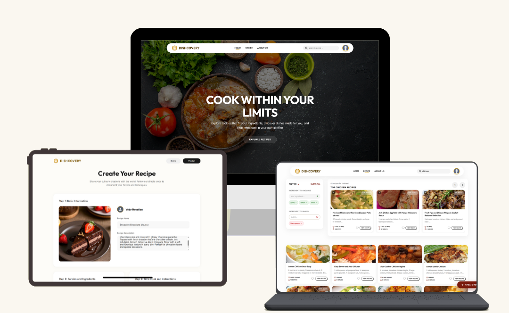

Software · Team project
Dishcovery
A recipe website for home cooks. Type the ingredients you have and the ones you must avoid, and Dishcovery ranks recipes by how well they match, so you can decide what to cook without opening dozens of pages.

The problem
Most recipe sites show recipes in general. Home cooks start from what is in the fridge, and some need to avoid certain ingredients. Using what you already have also supports SDG 12, cutting food waste.
Searching one by one
- Users open many recipes to check whether each one fits what they have
- Existing sites give no clear signal of how closely a recipe matches the ingredients entered
Allergies and avoidances
- Filtering out ingredients is limited, which matters for allergies and dietary needs
- One missed ingredient in a recipe can make it unusable for someone
The solution
- Search by dish name, ingredients you have, and ingredients to avoid
- Every result shows a match percentage, sorted from best to worst
- Accounts, favorites, and the option to publish your own recipes
The app
Search a dish, add ingredients you have and ones to avoid, then pick from results sorted by match. Click any screen to see it full size.
Home
A hero with one clear action, then popular recipes and a paged list of everything.
Login and sign up
A split layout: food photo on the left, the form on the right.
Search by ingredients
The main feature. Add what you have and what to avoid, and every card gets a match badge.
Recipe detail
Photo and author on top, then ingredients beside numbered instructions, then similar recipes.
Profile
Your own recipes, with edit and delete, and the ones you saved.
Create a recipe
A four-step form: basic info, portion and ingredients, time and instructions, type of food.
Edit a recipe
Owners can update their own recipes. The form comes pre-filled, leaving with unsaved changes asks for confirmation, and saving shows a success message.
Delete a recipe
Deleting is done from My Recipes in the profile. The delete button opens a confirmation first.
About
What the platform stands for.
How the match works
The core is a rule-based recommender, not a machine learning model. The /api/search endpoint filters and scores every recipe.
Input
Dish name, ingredients to include, and ingredients to avoid.
Exclude
Any recipe containing an avoided ingredient is skipped.
Score
Match % = matched include ingredients ÷ total include ingredients × 100 (case-insensitive substring match).
Sort
Highest match first. When a dish name is typed, the query is capped at 100 recipes for speed.
Example from the app
Search “chicken” (42 recipes), include lemon, garlic, onion, and avoid black pepper.
| Recipe | Matched | Match % |
|---|---|---|
| Lemon Chicken Orzo Soup | 3 / 3 | 100% |
| Lemon Garlic Chicken | 2 / 3 | 67% |
| Jerk Chicken Egg Rolls | 1 / 3 | 33% |
| Fresh Figs and Chicken Thighs | 0 / 3 | 0% |
What this shows
- Results are sorted from the highest match down
- Recipes with 0% still appear, at the end of the list
- A recipe containing black pepper never appears at all
Data
The recipes come from a public CSV of 1,090 Allrecipes recipes, with fields such as name, cuisine path, rating, image, time, servings, ingredients, and directions. A setup script cleans it, labels each recipe with a category, and loads it into SQLite.
| Step | Recipes left |
|---|---|
| Original CSV | 1,090 |
| After removing duplicate names | 961 |
| After the drink and non-food word filter | 916 |
| After excluding smoothies (final) | 880 |
By category, the 880 recipes split into 559 Dessert, 292 Main Dish, and 29 Breakfast. Recipes users create in the app are added on top of these.
| Table | What it holds |
|---|---|
| recipes | All recipes, including ones users create (user_id 0 means a system recipe) |
| featured | A copy sorted by rating, used for the “Everyone favorite” carousel |
| users | Username, email, password, bio, and profile picture |
| favorites | Which user saved which recipe (each pair is unique) |
| follows | Follower and followed pairs, no interface yet |
Cleaning the CSV
- Duplicate recipe names are removed
- Names with drink or non-food words (cocktail, wine, beer, juice, syrup, and similar) are filtered out, and smoothies are excluded
- Very short names (three characters or fewer) are dropped
Categorising and loading
- Keyword rules on the name and cuisine path, checked in order: Dessert, then Breakfast, then Main Dish (the default)
- The recipes table is shuffled, while the featured table is sorted by rating
- An index on category speeds up filtering, and a demo user is added for testing
Under the hood
A client-server app: Vanilla JS pages call a Flask REST API backed by SQLite. The same Flask app also serves the HTML pages.
Pages
10 HTML pages with their own JavaScript for search, recipe detail, profile, and create or edit.
Flask
app.py receives each request and runs the matching endpoint.
SQLite
Recipes, users, and favorites live in one file, recipes.db.
Response
The API returns JSON, and the page draws the cards.
| Group | Endpoints | What it does |
|---|---|---|
| Search and browse | 6 | Match search, ingredient suggestions, recipe list, featured, recipe detail, similar recipes |
| Accounts | 4 | Register, login, check email, reset password |
| Profile and favorites | 6 | Profile and stats, profile data, own recipes, saved favorites, update profile, toggle favorite |
| Recipe management | 3 | Create, update, and delete a recipe |
Ingredient suggestions
- Ingredient lines are split on commas, ignoring commas inside brackets
- Suggestions come from up to 50 recipes that match the dish name, with quantities and units stripped out
Similar recipes
- Keywords are taken from the recipe name, minus filler words like “easy” or “classic”
- Up to six recipes are returned, filled from the same category when keywords find fewer than four
Database queries are parameterised to prevent SQL injection.
Run it locally
Dishcovery is not deployed publicly. The repo ships with a pre-built database, so it runs in a few commands. The screenshots above show it running.
Clone
Clone the GitHub repo with
git cloneInstall
Create a venv, then install
requirements.txtStart
In the app folder:
python app.pyOpen
In your browser:
127.0.0.1:5001
To rebuild the database from recipes.csv, install pandas and run setup_db.py.
Limits and next steps
Limitations
- Passwords are stored as plain text, and sessions live in localStorage
- Password reset only checks that the email exists, with no verification link
- The API trusts the user_id sent by the browser, so editing and deleting a recipe are not yet checked against its owner on the server
- Substring matching can give false matches, and the dataset is in English, so ingredients are searched in English
- Categories come from keyword rules, and sweet words are checked first. About 218 of the 559 Dessert recipes are not under Desserts in the original data, so some savoury ones (such as a cranberry pork dish) are labelled Dessert
- The follows table exists but has no interface yet, and the app is not deployed
Next steps
- Hash passwords (bcrypt) and use token-based sessions
- Categorise from the dataset’s own cuisine path instead of keywords
- Check recipe ownership on the server for edit and delete
- Email-verified password reset
- Ingredient normalisation and Indonesian ingredient names
- Public deployment with a hosted database
My contribution
A team project for the Software Engineering course at BINUS University, built by five people (Group 5). Most areas were shared between two or three of us. I worked on the database and REST API, authentication, the search feature, and the create and edit pages, and I took part in the UI/UX design, UML, and Scrum with the team.
What I did
- SQLite database setup, table schema, and the recipes.csv import
- REST API development with Python Flask
- Authentication: register, login, forgot password, and profile
- Search page, ingredient filters, and the match percentage display
- CSS styling and the create and edit recipe pages
Done together
- UI/UX design in Figma
- UML diagrams and Scrum
- Hands-on across most of the other pages as the project came together